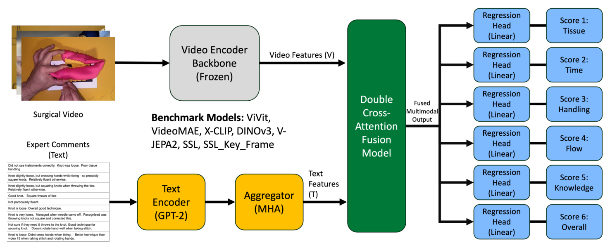
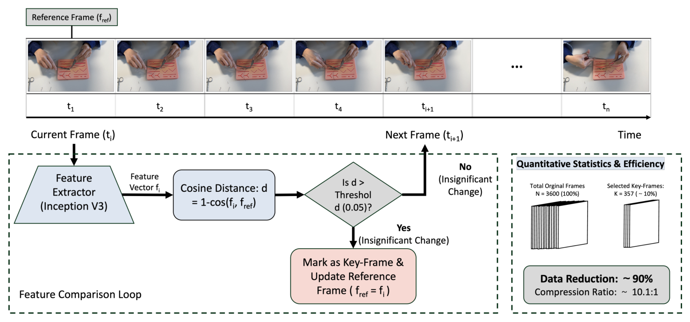
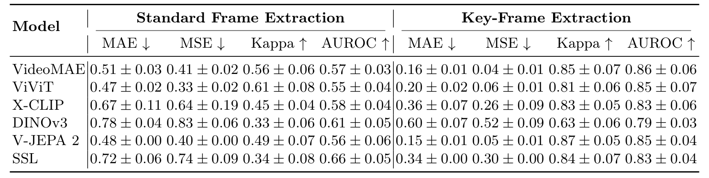
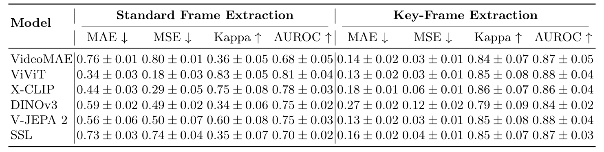

图文解读
1背景与动机
OSATS 是外科技术评分的通用量表：专家按组织保护、器械操作、操作流程等维度给 1 到 5 分。它要求专家逐段看录像，费时，不同评分者之间也有差异。
专家打分时常写评语解释原因，例如“结有点松”。现有自动方法几乎只看视频，评语这类解释分数的信息很少和视频、分数放进同一个评测协议。
作者想先给出一个可复现的基准设置，并明确说不追求新的最优架构。
2核心观点速览
做法是用一份小而三模态对齐的数据，配受控基线，分别看采样方式和评语各起多大作用。
- 数据：214 段约一分钟的模拟训练视频，两名以上专家按六维打分并写评语。
- 两种设置：纯视频预测算自动评估；评语辅助预测只算事后辅助，因为评语和分数出自同一批人。
- 采样：关键帧采样 CA-Frame 让六个骨干的四项指标全部改善。
- 评语：标准采样下帮助多数骨干，关键帧下增益很小。
边界： 只有视频级五折验证，独立测试集结果论文未说明，数据与代码未公开。
下面先看数据本身，因为所有边界都来自它怎么采集和划分。
3数据与标注
视频由医生提供，记录练习台上的操作区域；从论文图片看是缝合打结。受训者人数、任务种类和年资分布，论文未说明。
| 维度 | 原文名称 |
|---|---|
| 组织保护 | Respect for Tissue |
| 时间与动作 | Time & Motion |
| 器械操作 | Instrument Handling |
| 操作流程 | Flow of Operation |
| 器械知识 | Knowledge of Instruments |
| 总分 | Overall Score |
每维取多名评分者的均分作为连续标签。评分者间一致性、分数分布、每段的评分者人数，论文未说明，因此无法知道标签本身的噪声有多大。
数据怎么分，决定了结果能说明什么。
4划分与指标
10% 的视频留作测试集，其余 90% 做五折交叉验证，同一视频的帧、分数和评语只进一份。参与者与场次元数据不全，同一受训者的视频可能分在训练和验证两侧。 作者因此只称之为视频级内部性能。
- MAE 与 MSE：主指标，六维宏平均。
- 二次加权 kappa：预测取整后与取整均分比较，不等于评分者之间的信度。
- AUROC：按本数据集各维中位数分高低，阈值不是临床能力分界。
正文提到一个均值预测基线，但数字论文未说明，所以无法判断误差比平凡水平好多少。
5基线流程
- 帧采样：均匀抽 16 帧，或用 CA-Frame 选出关键帧后再按时间顺序抽 16 帧。
- 视觉编码：六个冻结骨干之一提取特征，投影到 256 维。
- 评语融合（仅辅助设置）：冻结 GPT-2 编码评语，多头注意力聚合，再与视频特征做双向协同注意力。
- 回归：六个线性头各输出一维分数，损失为六维 MSE 平均。

六个骨干是 VideoMAE、ViViT、X-CLIP、DINOv3、V-JEPA 2，以及在 SurgVU 840 多小时视频上预训练的手术域 SSL 编码器。训练用 AdamW，学习率 $1\times10^{-4}$，批量 8，200 轮。
两个变量里，采样方式的设计最需要细看。
6关键帧采样 CA-Frame
CA-Frame 用 InceptionV3 的 2048 维特征，当某帧与参考帧的余弦距离超过 0.05 时，记为关键帧并更新参考帧。平均从 3000 多帧中选出约 80 帧。两种采样都用 16 帧，CA-Frame 只改变帧的时间位置。

阈值和帧数怎么选，论文没有消融。下一节看它带来的变化有多大。
7纯视频结果

| 骨干 | 标准 MAE | 关键帧 MAE | 标准 AUROC | 关键帧 AUROC |
|---|---|---|---|---|
| VideoMAE | 0.51 | 0.16 | 0.57 | 0.86 |
| ViViT | 0.47 | 0.20 | 0.55 | 0.85 |
| X-CLIP | 0.67 | 0.36 | 0.58 | 0.83 |
| DINOv3 | 0.78 | 0.60 | 0.61 | 0.79 |
| V-JEPA 2 | 0.48 | 0.15 | 0.56 | 0.85 |
| SSL | 0.72 | 0.34 | 0.66 | 0.83 |
标准采样下 AUROC 都在 0.55 到 0.66，接近随机；换成关键帧后升到 0.79 到 0.86。 手术域 SSL 编码器没有优势，逐帧编码的 DINOv3 最差。
采样的作用这么大，加评语还能再提升多少？
8评语辅助结果

标准采样下，ViViT 的 MAE 从 0.47 降到 0.34，kappa 从 0.61 升到 0.83。但 VideoMAE 加评语后反而变差：MAE 从 0.51 升到 0.76，V-JEPA 2 也从 0.48 升到 0.56。
关键帧下，ViViT 与 V-JEPA 2 达到最佳 AUROC 0.88，比纯视频的 0.85 只高一点，在标准差 0.04 以内。
数字看完，接下来问这些数字能证明什么。
9结果没说什么
关键帧收益缺乏解释。 帧数不变却让误差降到约三分之一，至少有三种解释：关键帧信息更密；标准采样下模型只学到均值；关键帧集中在手和器械画面，模型借此认人，再借视频级划分记住这个人的分数。均值基线、按人划分和随机采样消融论文未说明，三者无法区分。
评语可能就是分数的文字版。 “结很松”“技术总体良好”几乎直接对应分数，ViViT 的 kappa 跳到 0.83 更像读出了答案。去掉评价词的对照论文未说明。
定性注意力图不能当证据。 示例是挑出来的，通用基线是哪个骨干论文未说明。
独立测试集结果论文未说明。 表中只有五折统计；SSL 关键帧等处标准差为 0.00，原因也未解释。
这些缺口决定了复现时要先补什么。
10复现与使用要注意什么
- 先拿到参与者编号，按人划分重跑。
- 先跑均值预测基线，再看骨干提升有没有意义。
- 评语辅助与纯视频分开报告，并写明评语来源。
- 数据与代码目前都未公开，论文只说代码以后公开，数据开放与否论文未说明。
按我的背景知识，JIGSAWS 等已有技能数据集以运动学或视频加分数为主，本文并未引用它们做对比；评语这一模态是 SurgSkill-Bench 的主要新意。